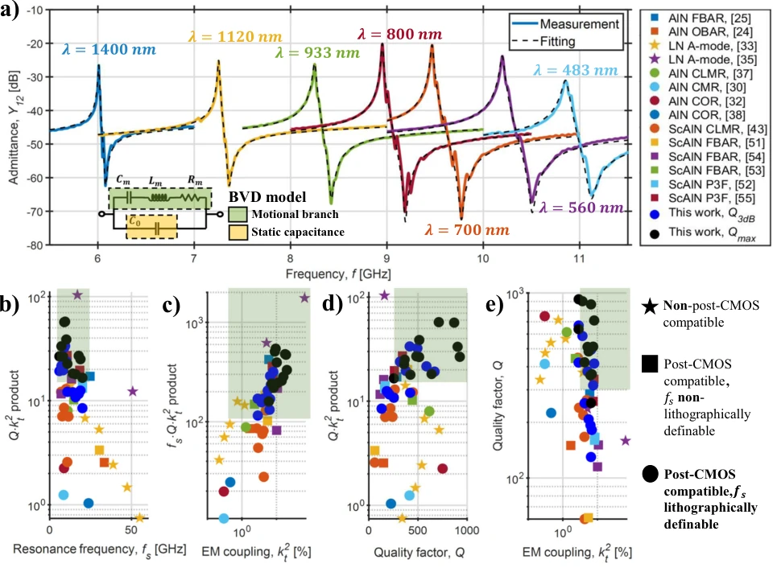
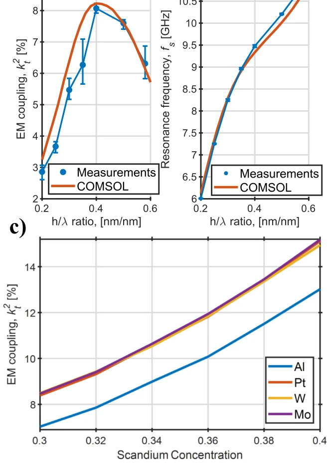
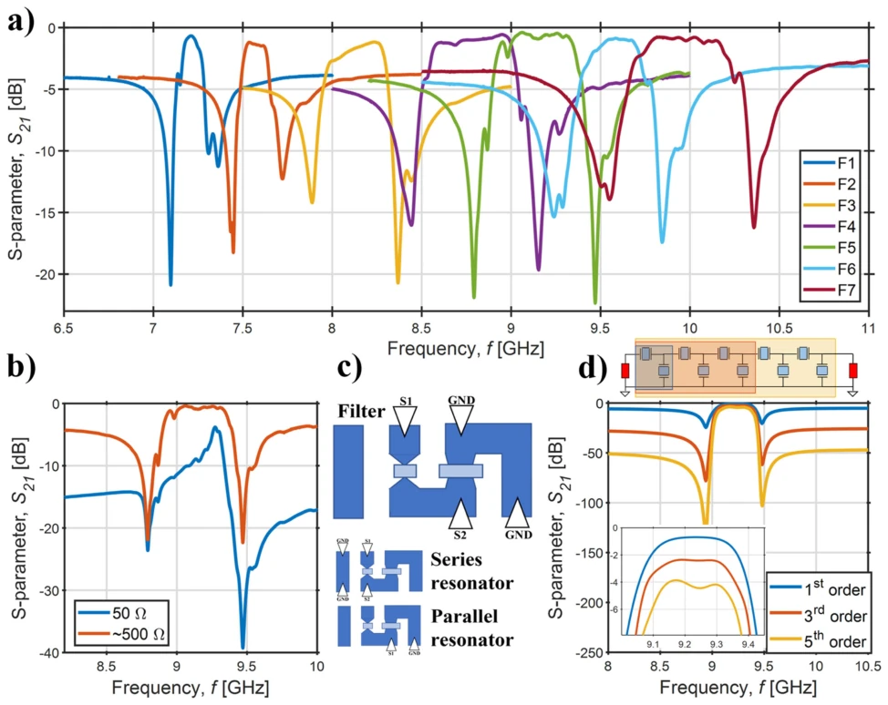
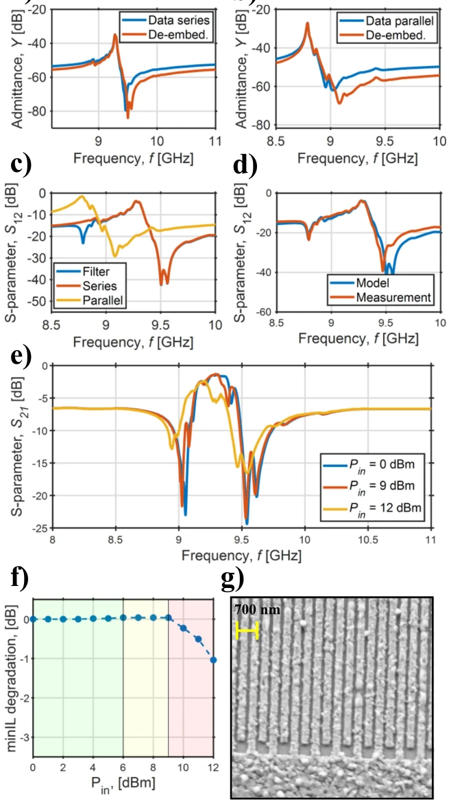
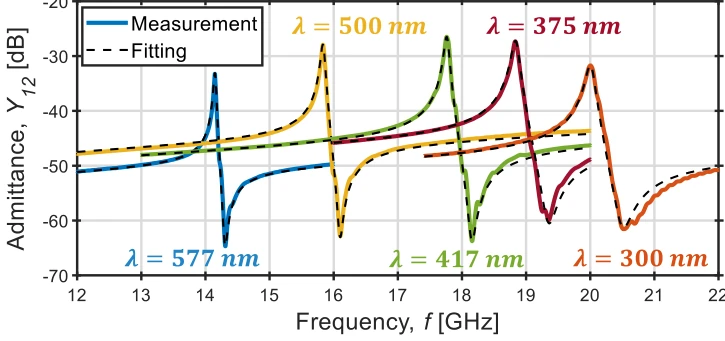

<!DOCTYPE html><html lang="zh"><head><meta charset="utf-8">
<meta name="viewport" content="width=device-width,initial-scale=1">
<title>Compact and wideband nanoacoustic pass-band filters for future 5G and 6G cellular radios</title><style>
body{font:16px/1.7 -apple-system,Segoe UI,Roboto,'Noto Sans CJK SC',sans-serif;
 max-width:860px;margin:0 auto;padding:32px 20px;color:#1a1a1a;background:#fafafa}
h1{font-size:24px;line-height:1.3} h2{font-size:19px;border-left:4px solid #6c8cff;
 padding-left:10px;margin-top:34px;color:#27408b}
.meta{color:#666;font-size:13px;margin-bottom:8px}
.meta a{color:#6c8cff;text-decoration:none;margin-right:10px}
figure{margin:16px 0;text-align:center}
figure img{max-width:100%;border:1px solid #e0e0e0;border-radius:6px;background:#fff}
figcaption{font-size:12px;color:#777;margin-top:6px}
.badge{background:#ffb454;color:#000;font-size:11px;font-weight:700;padding:2px 8px;border-radius:4px}
.back{font-size:13px}
.en{display:none}
.lang-en .zh{display:none}
.lang-en .en{display:revert}
.langbtn{position:fixed;top:12px;right:12px;background:#27408b;color:#fff;border:0;
 border-radius:6px;padding:6px 12px;cursor:pointer;font:inherit;z-index:10}
.catgrid{display:grid;grid-template-columns:repeat(auto-fill,minmax(155px,1fr));gap:10px;margin:12px 0}
.catblock{display:flex;flex-direction:column;align-items:center;justify-content:center;gap:8px;
 min-height:72px;padding:12px;background:#e3e7ef;border:2px solid #6c8cff;
 border-radius:10px;color:#1a2030;text-decoration:none;text-align:center;font-size:13px;font-weight:600;
 transition:background .15s}
.catblock:hover{background:#bcc4d6}
.catblock .cnt{color:#2f6bff;font-size:14px;font-weight:800}
</style></head><body>
<button class="langbtn" id="langbtn" onclick="toggleLang()">EN</button><script>function toggleLang(){var en=document.documentElement.classList.toggle('lang-en');try{localStorage.setItem('rd_lang',en?'en':'zh')}catch(e){}document.getElementById('langbtn').textContent=en?'中文':'EN'}(function(){try{if(localStorage.getItem('rd_lang')==='en')document.documentElement.classList.add('lang-en')}catch(e){}var b=document.getElementById('langbtn');if(b)b.textContent=document.documentElement.classList.contains('lang-en')?'中文':'EN'})();</script>
<p class="back"><a href="../index.html" onclick="if(history.length>1){history.back();return false}"><span class="zh">← 返回</span><span class="en">← Back</span></a></p>
<h1>Compact and wideband nanoacoustic pass-band filters for future 5G and 6G cellular radios</h1>
<p class="meta">G. Giribaldi, Luca Colombo, Pietro Simeoni, Matteo Rinaldi<br>
<a href="https://www.semanticscholar.org/paper/9f2d4a6e067439e05b38655271aa9f8b00472d96">abs</a><a href="https://www.nature.com/articles/s41467-023-44038-9.pdf">pdf</a></p>
<h2><span class="zh">论文点评</span><span class="en">Review</span></h2><div class="zh">这篇论文给 5G/6G 中频段滤波器市场带来了一剂猛药。作者利用高掺杂 ScAlN 薄膜实现了纳米声学滤波器，标榜 CMOS 兼容、体积小、带宽宽。虽然插入损耗确实做到了亚 dB 级别，看起来很美，但功率承受能力还是有点“脆”，铝指电极容易电迁移。而且温度系数还得优化，不然夏天手机发热可能就飘频了。不过能在 X 波段做到这种集成度，确实给射频前端设计省了不少空间，算是给未来手机芯片组打了个样，就是不知道量产良率能不能跟上这“纳米级”的精度。此外，虽然解决了带宽问题，但多频集成时的串扰控制仍需后续验证，毕竟在这么小的空间里塞进多个谐振器，电磁干扰可不是闹着玩的。</div><div class="en">This paper delivers a potent remedy to the 5G/6G mid-band filter market. The authors realized nano-acoustic filters using high-doped ScAlN films, boasting CMOS compatibility, small size, and wide bandwidth. Although the insertion loss indeed achieved sub-dB levels, looking very promising, the power handling capability is still somewhat &quot;fragile&quot;, as aluminum finger electrodes are prone to electromigration. Moreover, the temperature coefficient still needs optimization, otherwise, summer phone heating might cause frequency drift. However, achieving this level of integration in the X-band indeed saves considerable space for RF front-end design, serving as a prototype for future mobile chipsets, though it remains to be seen if mass production yield can keep up with this &quot;nanometer-level&quot; precision. Furthermore, although the bandwidth issue is resolved, crosstalk control during multi-frequency integration still requires subsequent verification, as cramming multiple resonators into such a small space means electromagnetic interference is no trivial matter.</div><h2><span class="zh">研究动机</span><span class="en">Motivation</span></h2><div class="zh">随着 5G 向 6G 演进，7-20 GHz 频段成为关键，但现有硬件跟不上。传统 SAW 滤波器高频损耗大 [8]，BAW 滤波器虽然 Q 值高但频率调节麻烦且体积大 [17]。现有的 LFE CLMR 技术虽然可光刻定义频率，但耦合系数低，难以合成宽带滤波器 [37, 38]。作者指出需要一种既能兼容 CMOS 后端工艺，又能通过光刻直接定义频率、且具备高机电耦合系数的方案，以解决中频段容量与覆盖的平衡问题。特别是对于未来 6G 中频段，带宽需求增至 400 MHz，现有器件难以满足，亟需新型平台。</div><div class="en">As 5G evolves towards 6G, the 7-20 GHz band becomes critical, but existing hardware cannot keep up. Traditional SAW filters have high loss at high frequencies [8], while BAW filters, although having high Q values, have cumbersome frequency tuning and large volume [17]. Existing LFE CLMR technology can define frequency via lithography, but has low coupling coefficients, making it difficult to synthesize wideband filters [37, 38]. The authors point out the need for a solution that is both compatible with CMOS backend processes, can define frequency directly via lithography, and possesses a high electromechanical coupling coefficient, to solve the balance problem of capacity and coverage in the mid-band. Especially for the future 6G mid-band, bandwidth requirements increase to 400 MHz, existing devices are difficult to satisfy, urgently needing a new platform.</div><figure><figcaption>Fig. 3 | Resonator admittance and scatter plots. a Measured admittance Y12 vs. frequency curves for showcase resonators from this work, along with their BVD fitting. The fitting parameters are shown in Table 2. b–e Scatter plots comparing the devices from this work with resonators in the literature above 6 GHz. The optimal performance region for the synthesis of filters for the 6G mid-band is highlighted in green. The considered frequency range is 7–20 GHz, while a Q  k2 t product of 15 is</figcaption></figure><h2><span class="zh">方法</span><span class="en">Method</span></h2><div class="zh">整体流程基于高掺杂 ScAlN 薄膜沉积与 LFE CLMR 结构设计。首先，采用反应磁控溅射在 200mm 硅片上沉积 280nm 厚的 Sc0.3Al0.7N 薄膜，优化结晶度以减少异常取向晶粒，确保高 Q 值。其次，设计无底电极的横向场激发 CLMR 结构，利用 IDT 指条宽度定义谐振频率，避免传统 BAW 的厚度依赖，简化工艺。接着，通过 COMSOL 仿真优化 h/λ 比和电极材料（Al），最大化 k_t^2，并验证了仿真与实验的一致性。最后，构建一阶梯形滤波器拓扑，利用提取的 BVD 模型进行阻抗匹配与级联设计，实现多频段集成，并通过去嵌入技术去除寄生影响。</div><div class="en">The overall process is based on high-doped ScAlN film deposition and LFE CLMR structure design. First, reactive magnetron sputtering is used to deposit a 280nm thick Sc0.3Al0.7N film on a 200mm silicon wafer, optimizing crystallinity to reduce abnormal oriented grains, ensuring high Q values. Second, a bottom-electrode-less lateral field excited CLMR structure is designed, utilizing IDT finger width to define resonant frequency, avoiding traditional BAW thickness dependence, simplifying the process. Next, COMSOL simulation is used to optimize the h/λ ratio and electrode material (Al), maximizing k_t^2, and verifying the consistency between simulation and experiment. Finally, a first-order ladder filter topology is constructed, utilizing the extracted BVD model for impedance matching and cascade design, achieving multi-band integration, and removing parasitic effects through de-embedding technology.</div><figure><figcaption>Fig. 5 | FEM simulations and agreement with experiments. a, b A-posteriori 2D COMSOL® simulations of the devices shown in Fig. 3 and agreement with the experimental data in predicting k2 t a and fs b. The error bars showthe maximum and minimum measured value per data point. In c, COMSOL® simulations of k2 t as</figcaption></figure><h2><span class="zh">实验</span><span class="en">Experiments</span></h2><div class="zh">在 7-11 GHz 频段制备了 7 个滤波器，中心频率覆盖 7.2 至 9.96 GHz。结果显示插入损耗低至 -0.39 dB，fractional bandwidth 最高达 5.7%。还测试了 14-20 GHz 的缩放性能，Q 值保持在 200 以上。功率测试发现 9 dBm 后性能开始下降，归因于 IDT 电迁移。相比之前的工作 [43]，插入损耗和带宽均有显著提升，证明了材料结晶度改进和工艺优化的有效性。此外，通过 ADS 仿真验证了高阶滤波器的性能，展示了技术扩展潜力。</div><div class="en">7 filters were prepared in the 7-11 GHz band, with center frequencies covering 7.2 to 9.96 GHz. Results show insertion loss as low as -0.39 dB, fractional bandwidth reaching up to 5.7%. Scaling performance at 14-20 GHz was also tested, with Q values maintained above 200. Power testing found performance begins to decline after 9 dBm, attributed to IDT electromigration. Compared to previous work [43], insertion loss and bandwidth both show significant improvement, proving the effectiveness of material crystallinity improvement and process optimization. Additionally, the performance of high-order filters was verified via ADS simulation, demonstrating the potential for technology scaling.</div><figure><figcaption>Fig. 4 | Microacoustic ladder filters. a Measured filter scattering parameter S21 vs. frequency for a bank of nanoacoustic devices fabricated on the same chip and matched via ADS® (see Table 3). In b, a comparison between unmatched (raw) and matched responses. In c, the pad structure is reported, together with the probing configurations to independently measure the filter and the series and parallel resonators. In d, ADS simulated and matched 1st, 3rd, and 5th order F5 filters are</figcaption></figure>
<figure><figcaption>Fig. 6 | Filter analysis. a, b Measured and de-embedded admittance responses of series and parallel resonators of F5 (Fig. 4a), c S21 of the de-embedded resonators and of the filter F5, and d comparison between measured and reconstructed filters from the responses shown in c. The discrepancyin the responses likely derives from the impact of pads and interconnects&#x27; parasitics. e) Measured S21 scattering para- meters of a showcase filter as function of the input power. In f, the minimum IL</figcaption></figure>
<figure><figcaption>Fig. 7 | On a further CLMR scaling. Measured and BVD fitted admittance vs. frequency responses of resonators operating in the 14–20 GHz range, demonstrating the scaling capabilities of the LFE CLMR technology.</figcaption></figure>
</body></html>